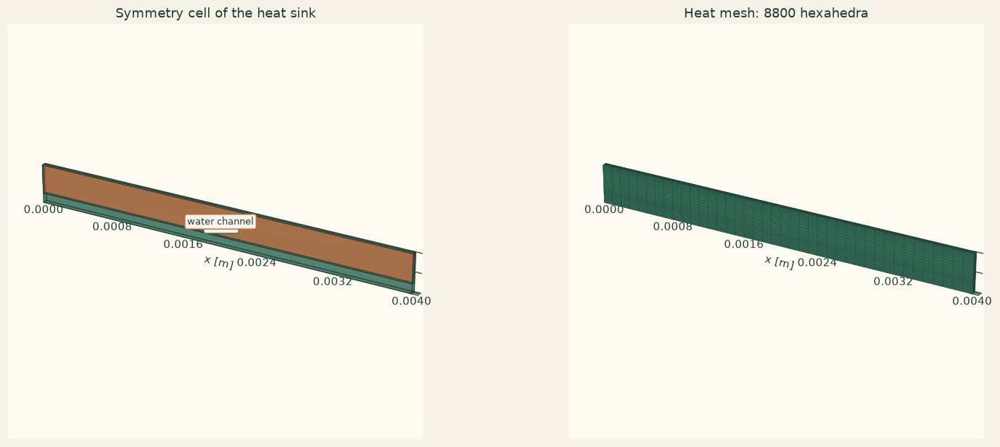

Docs › Examples › Thermal model of a silicon microchannel heat sink
Conjugate heat transfer · 3D
Thermal model of a silicon microchannel heat sink
A silicon heat sink with 50 µm water microchannels that carries 100 W/cm² away from a chip.

What it computes
OneSimulation solves the laminar 3D flow in half a channel with Taylor-Hood elements and the heat transport through water and silicon with quadratic elements on a graded hexahedral mesh whose faces follow the channel walls, the flow driving the heat one way. Outlet bulk temperature, base temperatures and thermal resistance are evaluated; a classical fin model gives an estimate. The script that builds the STEP files comes with the notebook.
What it checks
The 200 mW from the chip leave as 182.4 mW with the water and 17.7 mW by conduction through the fixed-temperature inlet, a balance closed to 0.08 %; the base reaches 36.2 °C at the outlet against 38.6 °C from the fin model, and the thermal resistance is 0.162 K cm²/W.
Geometry
The notebook starts at the import of the CAD files microchannel_heat_sink.step, microchannel_heat_sink_channel.step, microchannel_heat_sink_envelope.step: STEP (AP242), readable by any CAD program, with the names of the faces that the boundary conditions use. Put them next to the notebook.

The geometry script
The script microchannel_heat_sink_geometry.py builds the geometry with the CAD objects of OneSimulation and writes the files. Change a dimension there, run it, and run the notebook again.
"""Geometry of the OneSimulation example "Microchannel heat sink".
Builds one symmetry cell of a silicon microchannel heat sink with the CAD objects of OneSimulation:
half a water channel (25 um of its 50 um width, 300 um high) next to half a silicon fin, on a 100 um
silicon base, 4 mm long in the flow direction x. The cell is written to microchannel_heat_sink.step;
its faces are named after the two bodies: channel.x_min (inlet), channel.x_max (outlet),
channel.y_min (mid-plane of the channel), channel.z_max (glass cover over the channel), solid.z_min
(heated bottom), solid.y_max (mid-plane of the fin) and the silicon ends solid.x_min, solid.x_max.
The water channel alone, which marks the fluid region and carries the flow mesh, is written to
microchannel_heat_sink_channel.step. The box enclosing the cell, on which the hexahedral heat mesh
is laid, is written to microchannel_heat_sink_envelope.step.
"""
from onesim.cad.d3 import Box
um = 1e-6
length, channel, fin, base, height = 4000 * um, 25 * um, 25 * um, 100 * um, 300 * um
water = Box(length=length, width=channel, height=height, origin=(0.0, 0.0, base))
silicon = Box(length=length, width=channel + fin, height=base + height) - water
cell = water.named("channel") | silicon.named("solid")
cell.save("microchannel_heat_sink.step")
water.save("microchannel_heat_sink_channel.step")
Box(length=length, width=channel + fin, height=base + height).save(
"microchannel_heat_sink_envelope.step"
)The notebook
The complete notebook, cell by cell. Run it to produce the figures and the comparison printout.
Microchannel heat sinks (Tuckerman and Pease, IEEE Electron Device Lett. 2, 126, 1981) cool chips with very high heat flux. Here parallel channels, 50 µm wide and 300 µm deep, are etched 100 µm apart into a silicon block with a 100 µm base and closed by a glass cover; they are 4 mm long. Water enters at 20 °C with a mean velocity of 0.5 m/s, and the chip below delivers a uniform heat flux of \(q=100\) W/cm².
The flow is laminar (\(Re\approx40\)) and obeys the steady Navier-Stokes equations in the channel. The heat is conducted through the silicon and carried by the water,
with continuous temperature and heat flux across the walls (conjugate heat transfer). Properties are constant, so the flow drives the heat one way.
One symmetry cell, half a channel and half a fin, comes from the CAD file microchannel_heat_sink.step; microchannel_heat_sink_channel.step holds the water channel and microchannel_heat_sink_envelope.step the box around the cell. The script microchannel_heat_sink_geometry.py builds them with the CAD objects of OneSimulation.
| face | flow | heat | |---|---|---| | channel.x_min | fully developed profile, 0.5 m/s | \(T=293.15\) K | | channel.x_max | traction free | no conduction | | solid.z_min | — | heat flux \(q\) | | channel.y_min, solid.y_min, solid.y_max | symmetry (free slip) | no flux | | channel walls, cover, silicon ends | no slip | no flux |
Reference. All heat leaves with the water, so the outlet bulk temperature is fixed by the energy balance, \(T_{b,\mathrm{out}}=T_\mathrm{in}+q\,s\,L/(\dot m c_p)\) for the cell width \(s\) (Incropera et al., Fundamentals of Heat and Mass Transfer, Sec. 8.3). The base temperature is estimated with the classical fin model of the channel walls: a heat transfer coefficient \(h=Nu\,k/D_h\) from the fully developed Nusselt number of a rectangular duct of aspect ratio 6 heated on three sides, \(Nu\approx5.4\) (Shah and London, 1978), and the fin efficiency \(\eta=\tanh(mH)/(mH)\), \(m=\sqrt{2h/(k_s w_f)}\).
from dataclasses import replace
import numpy as np
from onesim.cad.d2 import Plane
from onesim.cad.exchange import load
from onesim.materials import IsotropicSolid, NewtonianFluid
from onesim.meshing import (
Geometric,
Piecewise,
StructuredHexahedralMesher,
TwoSided,
Uniform,
region_mesh,
)
from onesim.numerics import Numerics
from onesim.numerics.fem import FiniteElement, GalerkinAdvection, Lagrange, TaylorHood
from onesim.numerics.linear import SparseDirect
from onesim.numerics.nonlinear import Newton
from onesim.physics.heat_transfer import (
ConvectiveHeatTransfer,
FixedTemperature,
HeatFlux,
)
from onesim.physics.hydrodynamics import (
FixedVelocity,
FlowTraction,
FreeSlipLaw,
IncompressibleNavierStokes,
NoSlipWall,
WallShear,
fully_developed_inflow,
)
from onesim.results.derived import derived_field
from onesim.results.integration import integrate_plane
from onesim.results.sampling import field_function
from onesim.simulation import Problem, Simulation, regionwise
from onesim.simulation.initial_conditions import InitialValue
from onesim.visualization import plots, theme
theme.set()Geometry and mesh
The water channel gets its own hexahedral flow mesh. The heat mesh is laid on the box enclosing the cell (microchannel_heat_sink_envelope.step); its grading puts cell faces exactly on the channel walls, and region_mesh names its faces after the cell.
cell, channel = load("microchannel_heat_sink.step"), load(
"microchannel_heat_sink_channel.step"
)
envelope = load("microchannel_heat_sink_envelope.step")
faces, walls = cell.boundaries, channel.boundaries
length, width, total = cell.size
half_channel, depth = channel.size[1], channel.size[2]
base = total - depth
flow_mesh = StructuredHexahedralMesher(
cells=(40, 5, 16),
grading=(
Uniform(40),
Geometric(5, ratio=2.0, toward="end"),
TwoSided(16, ratio=2.5),
),
).generate(channel)
heat_mesh = region_mesh(
StructuredHexahedralMesher(
cells=(40, 10, 22),
grading=(
Uniform(40),
Piecewise(
(
(half_channel, Geometric(5, ratio=2.0, toward="end")),
(width - half_channel, Uniform(5)),
)
),
Piecewise(((base, Uniform(6)), (depth, TwoSided(16, ratio=2.5)))),
),
).generate(envelope),
cell,
geometry=cell,
)
view = plots.Camera(elevation=25, azimuth=-60)
fig = plots.figure(1, 2, size=(14, 5.5))
plots.geometry(
[cell.named("silicon"), channel.named("water channel")],
camera=view,
title="Symmetry cell of the heat sink",
ax=fig[0],
)
plots.mesh(
heat_mesh,
groups=("all",),
legend=False,
camera=view,
title=f"Heat mesh: {heat_mesh.cell_count} hexahedra",
ax=fig[1],
)
plots.show()Flow
water = NewtonianFluid(density=998.0, dynamic_viscosity=1.0e-3)
mean_speed = 0.5
channel_walls = walls.y_max | walls.z_min | walls.z_max
flow = IncompressibleNavierStokes(domain=channel.volume, material=water)
velocity = (
Simulation(
problem=Problem(
name="Channel flow",
geometry=channel,
physics=(flow,),
boundary_conditions=(
FixedVelocity(
boundary=walls.x_min,
physics=flow,
value=fully_developed_inflow(
flow_mesh,
walls.x_min,
mean_velocity=mean_speed,
no_slip=channel_walls,
),
),
FlowTraction(
boundary=walls.x_max,
physics=flow,
value=lambda x, y, z: np.zeros((len(x), 3)),
),
NoSlipWall(boundary=channel_walls, physics=flow),
WallShear(boundary=walls.y_min, physics=flow, law=FreeSlipLaw()),
),
initial_conditions=(InitialValue(flow.velocity, (0.0, 0.0, 0.0)),),
),
mesh=flow_mesh,
numerics=Numerics(
spatial=FiniteElement(element=TaylorHood()),
initial_guess={flow.velocity: (0.0, 0.0, 0.0)},
nonlinear_solver=Newton(
linear_solver=SparseDirect(),
absolute_tolerance=1e-14,
relative_tolerance=1e-10,
),
),
)
.solve_stationary()
.field(flow.velocity)
)Conjugate heat transfer
Water and silicon properties are assigned region by region. Outside the channel the velocity is that of the nearest point of the flow mesh, which lies on a no-slip wall: zero.
properties = {"water": (998.0, 4182.0, 0.6), "silicon": (2330.0, 700.0, 148.0)}
by_region = lambda index, unit: regionwise(
((channel, properties["water"][index]),),
default=properties["silicon"][index],
unit=unit,
)
material = replace(
IsotropicSolid(
density=1.0,
specific_heat_capacity=1.0,
thermal_conductivity=1.0,
youngs_modulus=1.0,
poisson_ratio=0.3,
thermal_expansion_coefficient=0.0,
),
density=by_region(0, "kg/m^3"),
specific_heat_capacity=by_region(1, "J/(kg*K)"),
thermal_conductivity=by_region(2, "W/(m*K)"),
)
inlet, flux = 293.15, 1.0e6
heat = ConvectiveHeatTransfer(
domain=cell.volume, material=material, velocity=field_function(velocity)
)
temperature = (
Simulation(
problem=Problem(
name="Heat sink",
geometry=cell,
physics=(heat,),
boundary_conditions=(
FixedTemperature(
boundary=faces["channel.x_min"], physics=heat, value=inlet
),
HeatFlux(boundary=faces["solid.z_min"], physics=heat, value=-flux),
HeatFlux(
boundary=faces.all - faces["channel.x_min"] - faces["solid.z_min"],
physics=heat,
value=0.0,
),
),
),
mesh=heat_mesh,
numerics=Numerics(
spatial=FiniteElement(
element=Lagrange(order=2), convection=GalerkinAdvection()
),
linear_solver=SparseDirect(),
),
)
.solve_stationary()
.field(heat.temperature)
)Results
The bulk temperature at the outlet from the enthalpy flux, the energy balance, and the temperatures of the heated base. Part of the heat is conducted upstream through the silicon and leaves through the inlet face, where the water temperature is held; the reaction of the inlet temperature measures it, and with it the balance closes.
outlet_plane = Plane(origin=(length - 1e-7, 0, 0), normal=(1, 0, 0))
carried = derived_field(
velocity,
lambda u, points: u[:, 0] * np.ravel(temperature.evaluate(points)),
name="enthalpy_flux",
unit="K*m/s",
)
flow_rate = integrate_plane(velocity, outlet_plane, normal_component=True).value
outlet = integrate_plane(carried, outlet_plane).value / flow_rate
balance = inlet + flux * width * length / (
properties["water"][0] * flow_rate * properties["water"][1]
)
x = np.linspace(0.0, length, 81)
bottom = temperature.evaluate(
np.column_stack((x, np.full_like(x, width / 2), np.full_like(x, 1e-7)))
)
diameter = 4 * (2 * half_channel * depth) / (2 * (2 * half_channel + depth))
h = 5.4 * properties["water"][2] / diameter
m = np.sqrt(2 * h / (properties["silicon"][2] * 2 * (width - half_channel)))
efficiency = np.tanh(m * depth) / (m * depth)
resistance = (
2 * width / (h * (2 * half_channel + 2 * efficiency * depth))
+ base / properties["silicon"][2]
)
print(
f"Reynolds number {water.density * mean_speed * diameter / water.dynamic_viscosity:.1f}, flow rate per cell {1e9 * flow_rate:.4f} µl/s"
)
print(
f"outlet bulk temperature {outlet - 273.15:.3f} °C, energy balance {balance - 273.15:.3f} °C (rise {outlet - inlet:.3f} K against "
f"{balance - inlet:.3f} K, {100 * ((outlet - inlet) / (balance - inlet) - 1):+.2f} %)"
)
heat_in = flux * width * length
carried_away = (
properties["water"][0] * properties["water"][1] * flow_rate * (outlet - inlet)
)
conducted = abs(temperature.reaction(faces["channel.x_min"]))
print(
f"heat from the chip {1e3 * heat_in:.3f} mW = carried off by the water {1e3 * carried_away:.3f} mW + conducted out through the "
f"fixed-temperature inlet {1e3 * conducted:.3f} mW; balance {100 * ((carried_away + conducted) / heat_in - 1):+.2f} %"
)
print(
f"base temperature: inlet end {bottom[0] - 273.15:.2f} °C, outlet end {bottom[-1] - 273.15:.2f} °C, highest {bottom.max() - 273.15:.2f} °C"
)
print(
f"fin model at the outlet: base {balance + flux * resistance - 273.15:.2f} °C with h = {h / 1e3:.1f} kW/(m² K) and fin efficiency "
f"{efficiency:.3f}; simulation {bottom[-1] - 273.15:.2f} °C"
)
print(
f"thermal resistance (highest base temperature - inlet) / q = {1e4 * (bottom.max() - inlet) / flux:.4f} K cm²/W"
)Figure
The temperature over the cross-section at the outlet, mirrored to two channels, the velocity there, and the temperatures along the heat sink.
fig = plots.figure(
layout=[["temperature", "velocity"], ["along", "along"]], size=(15, 11)
)
plots.section(
temperature,
plane=outlet_plane,
component=lambda T, p: np.ravel(T) - 273.15,
contours=12,
subdivisions=2,
symmetry={"planes": [((0, 1, 0), (0, 0, 0))]},
label="T [°C]",
xlabel="y [m]",
ylabel="z [m]",
title="Temperature at the outlet",
ax=fig["temperature"],
)
plots.section(
velocity,
plane=outlet_plane,
component=lambda u, p: u[:, 0],
contours=10,
subdivisions=2,
symmetry={"planes": [((0, 1, 0), (0, 0, 0))]},
label="u [m/s]",
xlabel="y [m]",
ylabel="z [m]",
title="Velocity at the outlet",
ax=fig["velocity"],
)
plots.line(
1e3 * x,
{"heated base": bottom - 273.15},
reference={
"bulk water, energy balance": (
1e3 * x,
inlet - 273.15 + (balance - inlet) * x / length,
)
},
points={"bulk water at the outlet": ([1e3 * length], [outlet - 273.15])},
xlabel="distance from the inlet [mm]",
ylabel="temperature [°C]",
title="Temperatures along the heat sink",
legend="upper left",
ax=fig["along"],
)
plots.show()Going further
Make the channels narrower and deeper in microchannel_heat_sink_geometry.py, the classical optimisation of the fin aspect ratio; raise the flow and watch the outlet temperature fall while the pressure drop grows; or let the water viscosity fall with temperature and couple both ways.